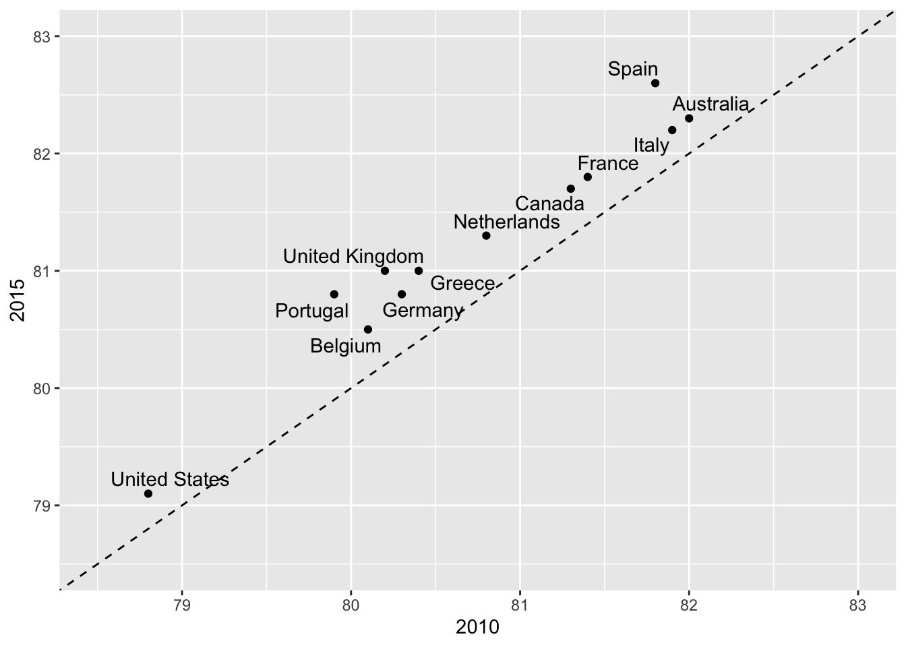
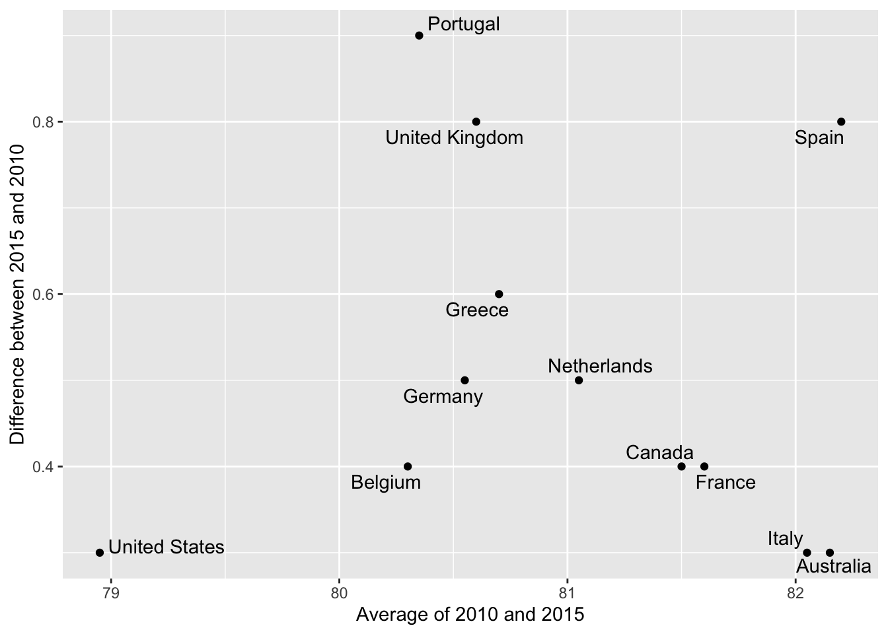
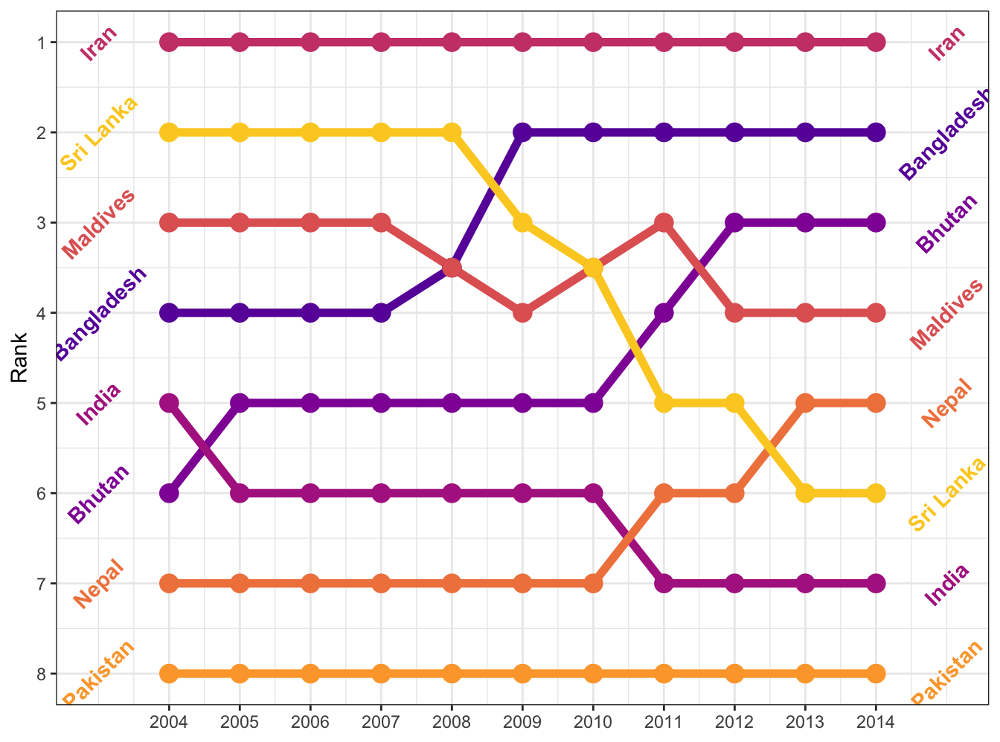
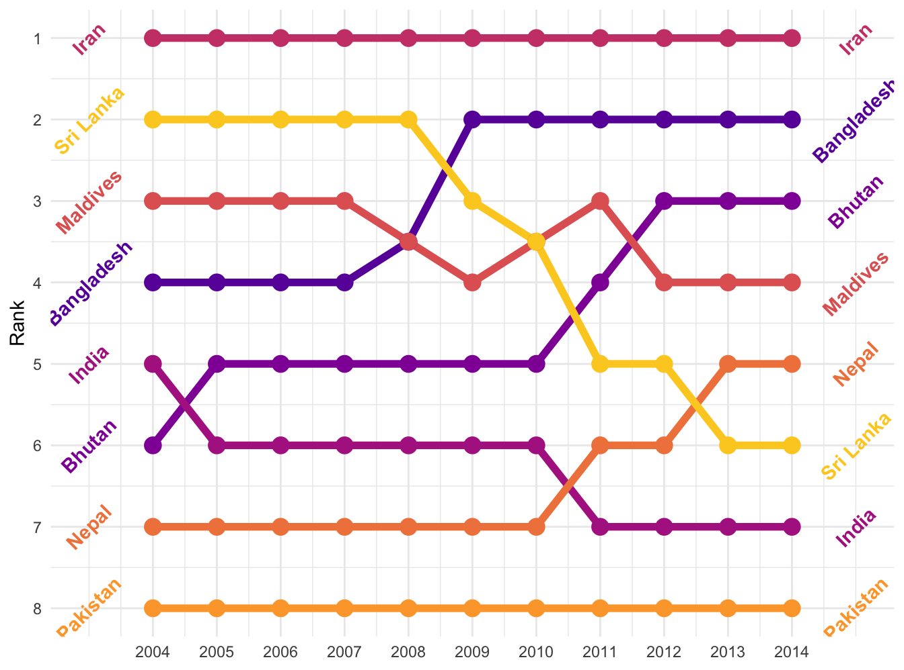
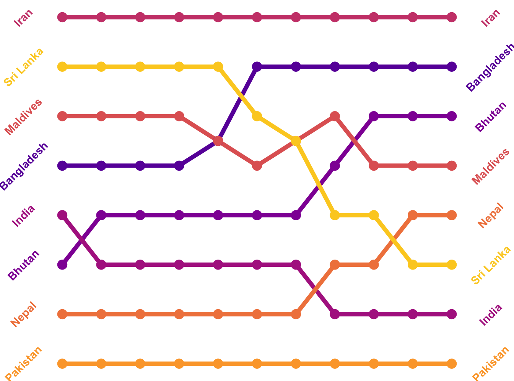
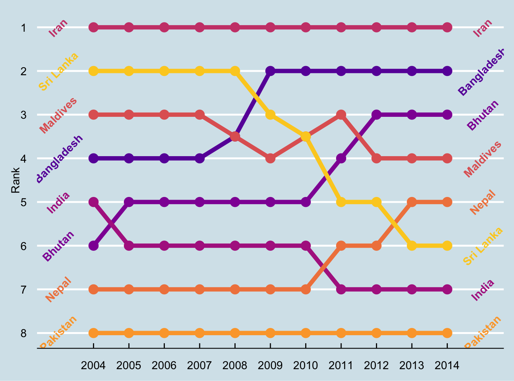
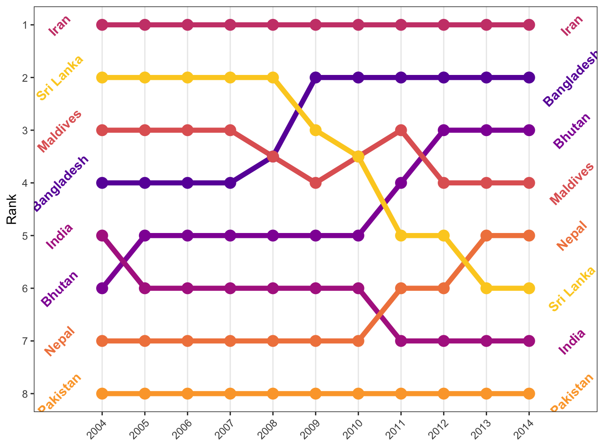
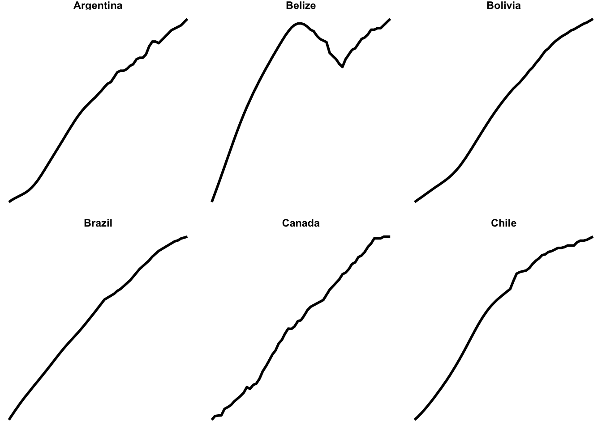
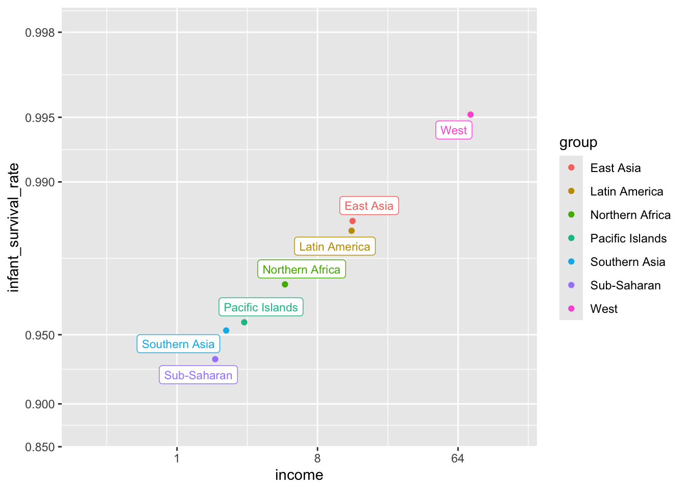
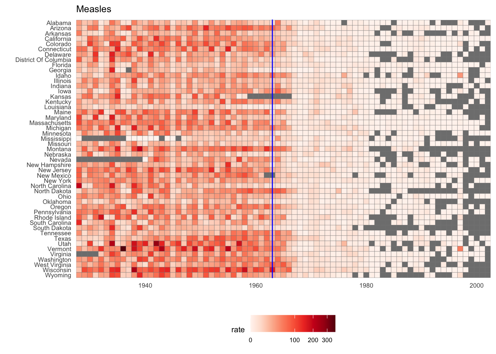

library(tidyverse)
library(dslabs)
library(ggrepel)
library(ggthemes)
gapminder = dslabs::gapminder %>% as_tibble()Visualizations
Group Projects
This class has three group projects - Project 1, Project 2, and the Final Project - that comprise a significant portion of your grade.
This week, we will form groups for these projects. You will work with the same group for each of the projects. The details will be posted soon, but the general idea is that you are given some data and asked to use your visualization and analytical skills to illustrate important patterns in the data. The final project will be on a topic of your group’s choice, while the first two will use data given as part of the assignment.
Groups may be 2 or 3 people, no more and no less. You are free to form your own group and anyone who does not form one will be assigned to one. With that in mind, let’s form our groups.
If you have a group of 2-3 individuals willing to work together for these three projects, do the following before this coming Sunday night at 11:59 pm:
- Think of a group name
- Have one person in the group email our TA, Zach, at smithsi6@msu.edu with the following:
The subject should be [EC242 Group Formation]
The email should CC all of the group members (so you know when you’ve been added to a group)
The email should list the names (as they appear in D2L) of each of the group members
The email should include the group name
If you would prefer to be assigned to a group, you don’t have to do anything. Once our TA has the voluntary groups set, they will assign groups to the rest of the class and email each group with instructions.
Data visualization in practice
In this lecture, we will demonstrate how relatively simple ggplot2 code can create insightful and aesthetically pleasing plots. As motivation we will create plots that help us better understand trends in world health and economics. We will implement what we learned in previous sections of the class and learn how to augment the code to perfect the plots. As we go through our case study, we will describe relevant general data visualization principles.
Case study: new insights on poverty
Hans Rosling1 was the co-founder of the Gapminder Foundation2, an organization dedicated to educating the public by using data to dispel common myths about the so-called developing world. The organization uses data to show how actual trends in health and economics contradict the narratives that emanate from sensationalist media coverage of catastrophes, tragedies, and other unfortunate events. As stated in the Gapminder Foundation’s website:
Journalists and lobbyists tell dramatic stories. That’s their job. They tell stories about extraordinary events and unusual people. The piles of dramatic stories pile up in peoples’ minds into an over-dramatic worldview and strong negative stress feelings: “The world is getting worse!”, “It’s we vs. them!”, “Other people are strange!”, “The population just keeps growing!” and “Nobody cares!”
Hans Rosling conveyed actual data-based trends in a dramatic way of his own, using effective data visualization. This section is based on two talks that exemplify this approach to education: [New Insights on Poverty]3 and The Best Stats You’ve Ever Seen4. Specifically, in this section, we use data to attempt to answer the following two questions:
- Is it a fair characterization of today’s world to say it is divided into western rich nations and the developing world in Africa, Asia, and Latin America?
- Has income inequality across countries worsened during the last 40 years?
To answer these questions, we will be using the gapminder dataset provided in dslabs. This dataset was created using a number of spreadsheets available from the Gapminder Foundation. You can access the table like this:
Exploring the Data
Taking an exercise from the New Insights on Poverty video, we start by testing our knowledge regarding differences in child mortality across different countries. For each of the six pairs of countries below, which country do you think had the highest child mortality rates in 2015? Which pairs do you think are most similar?
- Sri Lanka or Turkey
- Poland or South Korea
- Malaysia or Russia
- Pakistan or Vietnam
- Thailand or South Africa
When answering these questions without data, the non-European countries are typically picked as having higher child mortality rates: Sri Lanka over Turkey, South Korea over Poland, and Malaysia over Russia. It is also common to assume that countries considered to be part of the developing world: Pakistan, Vietnam, Thailand, and South Africa, have similarly high mortality rates.
To answer these questions with data, we can use tidyverse functions. For example, for the first comparison we see that:
dslabs::gapminder %>%
filter(year == 2015 & country %in% c("Sri Lanka","Turkey")) %>%
select(country, infant_mortality) country infant_mortality
1 Sri Lanka 8.4
2 Turkey 11.6Turkey has the higher infant mortality rate.
We can use this code on all comparisons and find the following:
| country | infant mortality | country | infant mortality |
|---|---|---|---|
| Sri Lanka | 8.4 | Turkey | 11.6 |
| Poland | 4.5 | South Korea | 2.9 |
| Malaysia | 6.0 | Russia | 8.2 |
| Pakistan | 65.8 | Vietnam | 17.3 |
| Thailand | 10.5 | South Africa | 33.6 |
We see that the European countries on this list have higher child mortality rates: Poland has a higher rate than South Korea, and Russia has a higher rate than Malaysia. We also see that Pakistan has a much higher rate than Vietnam, and South Africa has a much higher rate than Thailand. It turns out that when Hans Rosling gave this quiz to educated groups of people, the average score was less than 2.5 out of 5, worse than what they would have obtained had they guessed randomly. This implies that more than ignorant, we are misinformed. In this chapter we see how data visualization helps inform us by presenting patterns in the data that might not be obvious on first glance.
Slope charts
The slopechart is informative when you are comparing variables of the same type, but at different time points and for a relatively small number of comparisons. For example, comparing life expectancy between 2010 and 2015. In this case, we might recommend a slope chart.
There is no geometry for slope charts in ggplot2, but we can construct one using geom_line. We need to do some tinkering to add labels. We’ll paste together a character stright with the country name and the starting life expectancy, then do the same with just the later life expectancy for the right side. Below is an example comparing 2010 to 2015 for large western countries:
west <- c("Western Europe","Northern Europe","Southern Europe",
"Northern America","Australia and New Zealand")
dat <- gapminder %>%
filter(year%in% c(2010, 2015) & region %in% west &
!is.na(life_expectancy) & population > 10^7) %>%
mutate(label_first = ifelse(year == 2010, paste0(country, ": ", round(life_expectancy, 1), ' years'), NA),
label_last = ifelse(year == 2015, paste0(round(life_expectancy, 1),' years'), NA))
dat %>%
mutate(location = ifelse(year == 2010, 1, 2),
location = ifelse(year == 2015 &
country %in% c("United Kingdom", "Portugal"),
location+0.22, location),
hjust = ifelse(year == 2010, 1, 0)) %>%
mutate(year = as.factor(year)) %>%
ggplot(aes(year, life_expectancy, group = country)) +
geom_line(aes(color = country), show.legend = FALSE) +
geom_text_repel(aes(label = label_first, color = country), direction = 'y', nudge_x = -1, seed = 1234, show.legend = FALSE) +
geom_text_repel(aes(label = label_last, color = country), direction = 'y', nudge_x = 1, seed = 1234, show.legend = FALSE) +
xlab("") + ylab("Life Expectancy")An advantage of the slope chart is that it permits us to quickly get an idea of changes based on the slope of the lines. Although we are using angle as the visual cue, we also have position to determine the exact values. Comparing the improvements is a bit harder with a scatterplot:

In the scatterplot, we have followed the principle use common axes since we are comparing these before and after. However, if we have many points, slope charts stop being useful as it becomes hard to see all the lines.
Bland-Altman plot
Since we are primarily interested in the difference, it makes sense to dedicate one of our axes to it. The Bland-Altman plot, also known as the Tukey mean-difference plot and the MA-plot, shows the difference versus the average:
dat %>%
group_by(country) %>%
filter(year %in% c(2010, 2015)) %>%
dplyr::summarize(average = mean(life_expectancy),
difference = life_expectancy[year==2015]-life_expectancy[year==2010]) %>%
ggplot(aes(average, difference, label = country)) +
geom_point() +
geom_text_repel() +
geom_abline(lty = 2) +
xlab("Average of 2010 and 2015") +
ylab("Difference between 2015 and 2010")
Here, by simply looking at the y-axis, we quickly see which countries have shown the most improvement. We also get an idea of the overall value from the x-axis. You already made a similar Altman plot in an earlier problem set, so we’ll move on.
Bump charts
Finally, we can make a bump chart that shows changes in rankings over time. We’ll look at fertility in South Asia. First we need to calculate a new variable that shows the rank of each country within each year. We can do this if we group by year and then use the rank() function to rank countries by the fertility column.
sa_fe <- gapminder %>%
filter(region == "Southern Asia") %>%
filter(year >= 2004, year < 2015) %>%
group_by(year) %>%
mutate(rank = rank(fertility))We then plot this with points and lines, reversing the y-axis so 1 is at the top:
ggplot(sa_fe, aes(x = year, y = rank, color = country)) +
geom_line() +
geom_point() +
scale_y_reverse(breaks = 1:8) +
labs(x = "Year", y = "Rank", color = "Country")Iran holds the number 1 spot, while Sri Lanka dropped from 2 to 6, and Bangladesh increased from 4 to 2.
As with the slopegraph, there are 8 different colors in the legend and it’s hard to line them all up with the different lines, so we can plot the text directly instead. We’ll use geom_text() again. We don’t need to repel anything, since the text should fit in each row just fine. We need to change the data argument in geom_text() though and filter the data to only include one year, otherwise we’ll get labels on every point, which is excessive. We can also adjust the theme and colors to make it cleaner.
bumpplot <- ggplot(sa_fe, aes(x = year, y = rank, color = country)) +
geom_line(size = 2) +
geom_point(size = 4) +
geom_text(data = sa_fe %>% dplyr::filter(year==2004) %>% arrange(rank),
aes(label = country, x = 2003), fontface = "bold", angle = 45) +
geom_text(data = sa_fe %>% dplyr::filter(year==2014) %>% arrange(rank),
aes(label = country, x = 2015), fontface = "bold", angle = 45) +
guides(color = 'none') + # another way of turning off legend
scale_y_reverse(breaks = 1:8) +
scale_x_continuous(breaks = 2004:2014) +
scale_color_viridis_d(option = "C", begin = 0.2, end = 0.9) +
labs(x = NULL, y = "Rank") +
theme(plot.margin = unit(c(0.5, 0.5, 0.5, 0.5), "inches"))
bumpplotThemes
We can go a little further towards a clean, easy-to-read data visualization by using themes in our plots. Themes allow us to set a particular range of plot settings in one command, and let us further tweak things like fonts, background colors, and much more. We’ve used them in passing a few times without highlighting them, but we’ll discuss them here.
A pre-constructed set of instructions for making a visual theme can be had by using a theme’s ggplot function. Let’s look at two of my favorites.
theme_bw() uses the black-and-white theme, which is helpful in making a nice, clean plot:
bumpplot + theme_bw()
The background shading is gone, which gives the plot a nice, crisp feel. It adds the black outline around the plot, but doesn’t mess with the colors in the plot.
Here’s theme_minimal()
bumpplot + theme_minimal()
Themes can alter things in the plot as well. If we really want to strip it down and remove the Y-axis (which is rarely a good idea, but in a bump chart, it makes sense):
bumpplot + theme_void()
Now that’s clean!
In our opening unit, we had a plot that was styled after the plots in the magazine, The Economist. That’s a theme (in the ggthemes package that we loaded at the top)!
bumpplot + theme_economist()
Themes affect some of the plot elements that we haven’t gotten much into (like length of axis ticks and the color of the panel grid behind the plot). We can use a theme, then make further changes to the theme. We won’t go into a lot of detail, but here’s an example. Use the ?theme to learn more about what you can change. Half the challenge is finding the right term for the thing you want to tweak! Theme changes occur in code order, so you can update a pre-set theme with your own details:
bumpplot + theme_bw() + theme(strip.text = element_text(face = "bold"),
plot.title = element_text(face = "bold"),
axis.text.x = element_text(angle = 45, hjust = 1),
panel.grid.major.y = element_blank(), # turn off all of the Y grid
panel.grid.minor.y = element_blank(),
panel.grid.minor.x = element_blank()) # turn off small x grid
Theme elements
The above code looks a little odd in that asking it to leave out the minor and major Y grid, and the major X grid, required element_blank(), a function! Since a “blank” part (or a solid color part) might entail a lot of particular things, the ggplot function is necessary here to take care of all the particular details.
Relatedly, if we wanted to change the background color of some panel (the plotted area), then element_rect() would be used because the panel is a rectangle. The theme argument would be panel.background =element_rect(fill="red") if we wanted to make it red (and hideous)
bumpplot + theme_bw() + theme(strip.text = element_text(face = "bold"),
panel.background = element_rect(fill='red'),
plot.title = element_text(face = "bold"),
axis.text.x = element_text(angle = 45, hjust = 1),
panel.grid.major.y = element_blank(), # turn off all of the Y grid
panel.grid.minor.y = element_blank(),
panel.grid.minor.x = element_blank()) # turn off small x gridWe can also set the strip.background for the “strip” rectangles that label our facet_wrap and facet_gridsections,and plot.background for the area behind the plot panel.
In the above example, we also set the element_text function for the axis text and specified a rotation (see the years are at 45 degrees) and a horizontal-adjustment so that they center over the line. element_text is a theme element that controls how the text looks (including font, face, color, etc). This is particularly useful when you have appropriate axis labels that might be long, like the scales::label_comma from earlier this week. We can avoid scrunching our labels by using element_text to set a new angle (45 or 90).
Small multiples
First we can make some small multiples plots and show life expectancy over time for a handful of countries. We’ll make a list of some countries chosen at random while I scrolled through the data, and then filter our data to include only those rows. We then plot life expectancy, faceting by country.
life_expectancy_small <- gapminder %>%
filter(country %in% c("Argentina", "Bolivia", "Brazil",
"Belize", "Canada", "Chile"))
ggplot(data = life_expectancy_small,
mapping = aes(x = year, y = life_expectancy)) +
geom_line(size = 1) +
facet_wrap(vars(country))Small multiples! That’s all we need to do.
We can do some fancier things, though. We can make this plot hyper minimalist with a theme:
ggplot(data = life_expectancy_small,
mapping = aes(x = year, y = life_expectancy)) +
geom_line(size = 1) +
facet_wrap(vars(country), scales = "free_y") +
theme_void() +
theme(strip.text = element_text(face = "bold"))
We can do a whole part of a continent (poor Syria 😿)
life_expectancy_mena <- gapminder %>%
filter(region == "Northern Africa" | region == "Western Asia")
ggplot(data = life_expectancy_mena,
mapping = aes(x = year, y = life_expectancy)) +
geom_line(size = 1) +
facet_wrap(vars(country), scales = "free_y", nrow = 3) +
theme_void() +
theme(strip.text = element_text(face = "bold"))
We can use the geofacet package to arrange these facets by geography:
library(geofacet)
life_expectancy_eu <- gapminder %>%
filter(region== 'Western Europe' | region=='Northern Europe' | region=='Southern Europe')
ggplot(life_expectancy_eu, aes(x = year, y = life_expectancy)) +
geom_line(size = 1) +
facet_geo(vars(country), grid = "europe_countries_grid1", scales = "free_y") +
labs(x = NULL, y = NULL, title = "Life expectancy from 1960–2015",
caption = "Source: Gapminder") +
theme_minimal() +
theme(strip.text = element_text(face = "bold"),
plot.title = element_text(face = "bold"),
axis.text.x = element_text(angle = 45, hjust = 1))Neat!
Anybody see any problems here?
The ecological fallacy and importance of showing the data
Throughout this section, we have been comparing regions of the world. We have seen that, on average, some regions do better than others. In this section, we focus on describing the importance of variability within the groups when examining the relationship between a country’s infant mortality rates and average income.
We define a few more regions and compare the averages across regions:

The relationship between these two variables is almost perfectly linear and the graph shows a dramatic difference. While in the West less than 0.5% of infants die, in Sub-Saharan Africa the rate is higher than 6%!
Note that the plot uses a new transformation, the logit transformation.
Logit transformation
The logit transformation for a proportion or rate \(p\) is defined as:
\[f(p) = \log \left( \frac{p}{1-p} \right)\]
When \(p\) is a proportion or probability, the quantity that is being logged, \(p/(1-p)\), is called the odds. In this case \(p\) is the proportion of infants that survived. The odds tell us how many more infants are expected to survive than to die. The log transformation makes this symmetric. If the rates are the same, then the log odds is 0. Fold increases or decreases turn into positive and negative increments, respectively.
This scale is useful when we want to highlight differences near 0 or 1. For survival rates this is important because a survival rate of 90% is unacceptable, while a survival of 99% is relatively good. We would much prefer a survival rate closer to 99.9%. We want our scale to highlight these difference and the logit does this. Note that 99.9/0.1 is about 10 times bigger than 99/1 which is about 10 times larger than 90/10. By using the log, these fold changes turn into constant increases.
Show the data
Now, back to our plot. Based on the plot above, do we conclude that a country with a low income is destined to have low survival rate? Do we conclude that survival rates in Sub-Saharan Africa are all lower than in Southern Asia, which in turn are lower than in the Pacific Islands, and so on?
Jumping to this conclusion based on a plot showing averages is referred to as the ecological fallacy. The almost perfect relationship between survival rates and income is only observed for the averages at the region level. Once we show all the data, we see a somewhat more complicated story:

Specifically, we see that there is a large amount of variability. We see that countries from the same regions can be quite different and that countries with the same income can have different survival rates. For example, while on average Sub-Saharan Africa had the worse health and economic outcomes, there is wide variability within that group. Mauritius and Botswana are doing better than Angola and Sierra Leone, with Mauritius comparable to Western countries.
Case study: vaccines and infectious diseases
Vaccines have helped save millions of lives. In the 19th century, before herd immunization was achieved through vaccination programs, deaths from infectious diseases, such as smallpox and polio, were common. However, today vaccination programs have become somewhat controversial despite all the scientific evidence for their importance.
The controversy started with a paper5 published in 1988 and led by Andrew Wakefield claiming there was a link between the administration of the measles, mumps, and rubella (MMR) vaccine and the appearance of autism and bowel disease. Despite much scientific evidence contradicting this finding, sensationalist media reports and fear-mongering from conspiracy theorists led parts of the public into believing that vaccines were harmful. As a result, many parents ceased to vaccinate their children. This dangerous practice can be potentially disastrous given that the Centers for Disease Control (CDC) estimates that vaccinations will prevent more than 21 million hospitalizations and 732,000 deaths among children born in the last 20 years (see Benefits from Immunization during the Vaccines for Children Program Era — United States, 1994-2013, MMWR6). The 1988 paper has since been retracted and Andrew Wakefield was eventually “struck off the UK medical register, with a statement identifying deliberate falsification in the research published in The Lancet, and was thereby barred from practicing medicine in the UK.” (source: Wikipedia7). Yet misconceptions persist, in part due to self-proclaimed activists who continue to disseminate misinformation about vaccines.
Effective communication of data is a strong antidote to misinformation and fear-mongering. Earlier we used an example provided by a Wall Street Journal article8 showing data related to the impact of vaccines on battling infectious diseases. Here we reconstruct that example.
The data used for these plots were collected, organized, and distributed by the Tycho Project9. They include weekly reported counts for seven diseases from 1928 to 2011, from all fifty states. The yearly totals are helpfully included in the dslabs package:
library(RColorBrewer)
data(us_contagious_diseases)
names(us_contagious_diseases)[1] "disease" "state" "year" "weeks_reporting"
[5] "count" "population" We create a temporary object dat that stores only the measles data, includes a per 100,000 rate, orders states by average value of disease and removes Alaska and Hawaii since they only became states in the late 1950s. Note that there is a weeks_reporting column that tells us for how many weeks of the year data was reported. We have to adjust for that value when computing the rate.
the_disease <- "Measles"
dat <- us_contagious_diseases %>%
filter(!state%in%c("Hawaii","Alaska") & disease == the_disease) %>%
mutate(rate = count / population * 10000 * 52 / weeks_reporting) %>%
mutate(state = reorder(state, rate))We can now easily plot disease rates per year. Here are the measles data from California:
dat %>% filter(state == "California" & !is.na(rate)) %>%
ggplot(aes(year, rate)) +
geom_line() +
ylab("Cases per 10,000") +
geom_vline(xintercept=1963, col = "blue")
We add a vertical line at 1963 since this is when the vaccine was introduced [Control, Centers for Disease; Prevention (2014). CDC health information for international travel 2014 (the yellow book). p. 250. ISBN 9780199948505].
Now can we show data for all states in one plot? We have three variables to show: year, state, and rate. In the WSJ figure, they use the x-axis for year, the y-axis for state, and color hue to represent rates. However, the color scale they use, which goes from yellow to blue to green to orange to red, can be improved.
In our example, we want to use a sequential palette since there is no meaningful center, just low and high rates.
We use the geometry geom_tile to tile the region with colors representing disease rates. We use a square root transformation to avoid having the really high counts dominate the plot. Notice that missing values are shown in grey. Note that once a disease was pretty much eradicated, some states stopped reporting cases all together. This is why we see so much grey after 1980.
dat %>%
mutate(state = factor(state, levels = rev(levels(state)[order(levels(state))]))) %>%
ggplot(aes(year, state, fill = rate)) +
geom_tile(color = "grey50") +
scale_x_continuous(expand=c(0,0)) +
scale_fill_gradientn(colors = brewer.pal(9, "Reds"), trans = "sqrt") +
geom_vline(xintercept=1963, col = "blue") +
theme_minimal() +
theme(panel.grid = element_blank(),
legend.position="bottom",
text = element_text(size = 8)) +
ggtitle(the_disease) +
ylab("") + xlab("")
This plot makes a very striking argument for the contribution of vaccines. However, one limitation of this plot is that it uses color to represent quantity, which we earlier explained makes it harder to know exactly how high values are going. Position and lengths are better cues. If we are willing to lose state information, we can make a version of the plot that shows the values with position. We can also show the average for the US, which we compute like this:
avg <- us_contagious_diseases %>%
filter(disease==the_disease) %>% group_by(year) %>%
summarize(us_rate = sum(count, na.rm = TRUE) /
sum(population, na.rm = TRUE) * 10000)Now to make the plot we simply use the geom_line geometry:
dat %>%
filter(!is.na(rate)) %>%
ggplot() +
geom_line(aes(year, rate, group = state), color = "grey50",
show.legend = FALSE, alpha = 0.2, size = 1) +
geom_line(mapping = aes(year, us_rate), data = avg, size = 1) +
scale_y_continuous(trans = "sqrt", breaks = c(5, 25, 125, 300)) +
ggtitle("Cases per 10,000 by state") +
xlab("") + ylab("") +
geom_text(data = data.frame(x = 1955, y = 50),
mapping = aes(x, y, label="US average"),
color="black") +
geom_vline(xintercept=1963, col = "blue")In theory, we could use color to represent the categorical value state, but it is hard to pick 50 distinct colors.
Saving your plot
In RMarkdown, we display the plot as part of the chunk output. For your group project (or for future use) you’ll likely need to save your plot as well. The function ggsave is a good way of outputting your plot.
ggsave(myPlot, file = 'myPlot.png', width = 7, height = 5, dpi=300)File type will be discerned from the suffix on the file, and the height and width are in inches. The dpi argument sets the pixes-per-inch. Generally, screens display at around 150 (though this is rapidly increasing, it used to be 72 dpi), and print is usually 300 or better. A width of 5 inches at 300 dpi will render an image 1,500 pixels across.
TRY IT
Reproduce the heatmap plot we previously made but for smallpox. For this plot, do not include years in which cases were not reported in 10 or more weeks.
Now reproduce the time series plot we previously made, but this time following the instructions of the previous question for smallpox.
For the state of California, make a time series plot showing rates for all diseases. Include only years with 10 or more weeks reporting. Use a different color for each disease.
Now do the same for the rates for the US. Hint: compute the US rate by using summarize: the total divided by total population.
Footnotes
https://en.wikipedia.org/wiki/Hans_Rosling↩︎
http://www.gapminder.org/↩︎
https://www.ted.com/talks/hans_rosling_reveals_new_insights_on_poverty?language=en↩︎
https://www.ted.com/talks/hans_rosling_shows_the_best_stats_you_ve_ever_seen↩︎
http://www.thelancet.com/journals/lancet/article/PIIS0140-6736(97)11096-0/abstract↩︎
https://www.cdc.gov/mmwr/preview/mmwrhtml/mm6316a4.htm↩︎
https://en.wikipedia.org/wiki/Andrew_Wakefield↩︎
http://graphics.wsj.com/infectious-diseases-and-vaccines/↩︎
http://www.tycho.pitt.edu/↩︎